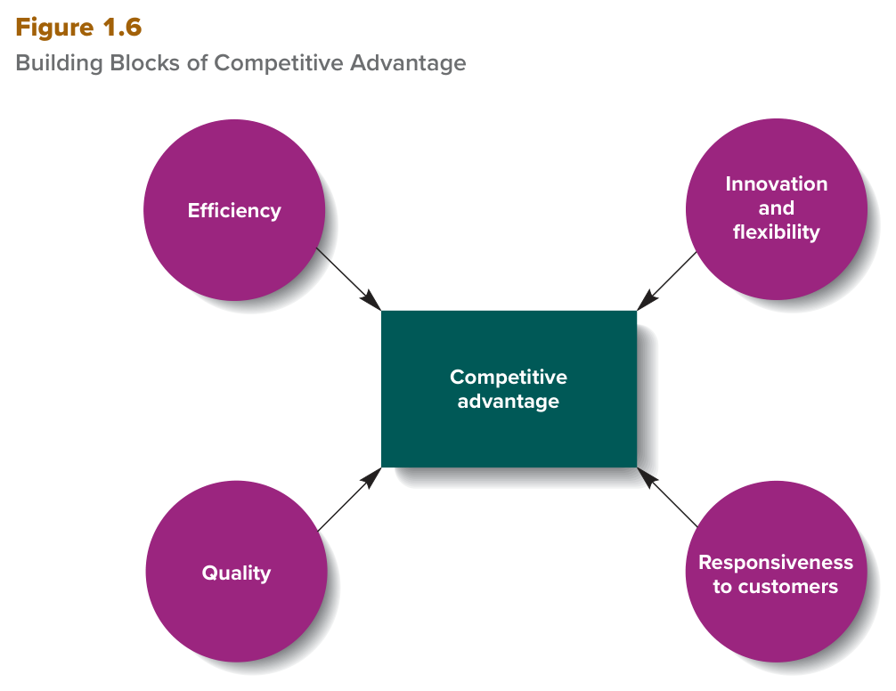

MGT 102 · Chapter 1 · Section 4 of 4:
Recent Changes and Global Challenges
Objective LO1-5: Discuss some major changes in management practices today that have occurred as a result of globalization and the use of advanced technologies.
Objective LO1-6: Discuss the principal challenges managers face in today's increasingly competitive global environment.
LO1-5 asks: what changed in the manager's job in recent years? The answer is four words: restructuring · outsourcing · empowerment · self-managed teams. LO1-6 asks: what challenges does a manager face in a world full of competition? The answer is five challenges, and the first one is competitive advantage with its four building blocks.
The questions in this section are usually two kinds: definition (what is the name of this thing?) and counting (how many are there? which one is NOT one of them?). Memorize the numbers now: two factors behind the change, four building blocks, five challenges, two kinds of crisis causes, four choices in crisis management.
You already met these ideas in Arabic. This page gives you the same ideas in English, because your textbook and your exam are in English.
The book starts with a question: why has the manager's job changed so dramatically in recent years? It gives you only two factors:
| Factor | What it did |
|---|---|
| Global competition المنافسة العالمية |
Stiff competition for resources from companies inside the country and outside it puts pressure on all managers to improve efficiency and effectiveness. Top managers now ask the managers below them to look beyond their own department and see the whole company (a cross-departmental view). |
| Advances in technology التقدّم التقني |
Technology gives managers more and better information, so they plan, organize, lead, and control better. It also gives employees more information about their jobs, so they become more skilled, specialized, and productive — and this raises employee engagement. |
To raise efficiency and effectiveness, managers went down two main roads: the first is restructuring and outsourcing (this concept), and the second is empowerment and self-managed teams (the next concept).
| Restructuring — إعادة الهيكلة | Outsourcing — الاستعانة بمصادر خارجية | |
|---|---|---|
| Definition | Simplifying, shrinking, or downsizing the company's operations to lower operating costs. | Contracting with another company — usually in a low-cost country abroad — to do work the company used to do itself: manufacturing, marketing, or customer service. |
| How it is done | By eliminating product teams, shrinking departments, and reducing levels in the hierarchy. Result: many jobs are lost — top, middle, and first-line managers, plus nonmanagerial employees. | Send the work to a company outside. Top outsourcing countries: Philippines · India · Malaysia. Even programming jobs went to India, Ukraine, and China — a programmer there works for one-third of the U.S. salary. |
| The benefit | Lower costs. Technology increased downsizing because it lets fewer employees do the same work. | It raises efficiency because it lowers costs, and it frees up money and resources that can be used in more effective ways — for example, to develop new products. |
| The downsides | The morale of the remaining employees goes down (they worry about their jobs and feel overworked). Sometimes the company finds it has downsized too far when customers complain about poor service. | Problems with suppliers in Asia, and wages there are rising. |
| Book examples | Macy's · 3M · Airbnb — and the 2020 pandemic forced most companies to cut costs. | Ford · IBM · AT&T · Amazon streamlined their operations. |
Two numbers the exam likes: large companies today employ 10–20% fewer people than 10 years ago (because of restructuring + outsourcing + technology), and global spending on technology in 2023 is expected to top $4.6 trillion. The book's argument: people who lost their jobs will find work in new U.S. companies, and the manufacturing jobs that went overseas will be replaced by higher-paying jobs in the service sector.
Restructuring involves simplifying, shrinking, or downsizing an organization's operations to lower operating costs. Restructuring can be done by eliminating product teams, shrinking departments, and reducing levels in the hierarchy. Restructuring, however, can produce some powerful negative outcomes: it can reduce the morale of remaining employees. Outsourcing involves contracting with another company, usually in a low-cost country abroad, to have it perform a work activity the organization previously performed itself, such as manufacturing, marketing, or customer service. Outsourcing increases efficiency because it lowers operating costs, freeing up money and resources that can be used in more effective ways. Two major factors that have led to these changes are global competition and advances in technology.
| Term | Definition | What matters for you |
|---|---|---|
| Empowerment التمكين |
A management technique that gives employees more authority and responsibility over how they perform their work. | One result: a flatter organizational structure. The book's example is Valve Corporation: no hierarchy, no reporting structure, employees pick their own projects, and bonuses, hiring, and firing are decided by peer review. |
| Self-managed work teams فرق الإدارة الذاتية |
Groups of employees who take collective responsibility for organizing, supervising, and controlling their own work. | The team takes over tasks that the first-line manager used to do, so the first-line manager becomes a coach or mentor: he does not tell them what to do; he gives advice and guidance. Middle managers use technology to monitor the teams and make better decisions about resource allocation. |
| Remote workers العاملون عن بُعد |
Employees of the company who work outside the office several times a week, or the whole workweek. | Normal after COVID-19: companies sent employees home in 2020 and found that productivity increased. |
The role of technology here: technology "empowers" the employee because it expands his job knowledge and broadens his responsibilities — one employee does work that several employees used to do, so he has more autonomy. It also gives the team real-time information about each member's performance, so the team finishes the task faster.
Remote-work numbers (the book mentions them):
Empowerment is a management technique that involves giving employees more authority and responsibility over how they perform their work activities. One by-product of fostering an empowered workforce may include a flatter organizational structure. Self-managed work teams are groups of employees who assume collective responsibility for organizing, supervising, and controlling their own work activities. With self-managed teams, first-line managers act as coaches or mentors whose job is not to tell employees what to do, but to provide advice and guidance. Remote workers are usually employees of a company who work outside of the office several times a week, if not the entire workweek. Companies are also empowering their workforces and using self-managed teams to increase efficiency and effectiveness.
The world changes faster than ever, and in the last 20 years the rivalry between organizations has increased a lot — domestically (inside the country) and globally (in other countries). The big reason is the rise of global organizations: organizations that operate and compete in more than one country. The book's examples: Bayer (pharmaceuticals, Germany) · Natuzzi (furniture, Italy) · Samsung and LG (electronics, Korea) · Embraer (planes, Brazil) · Airbus (Europe). Even the not-for-profit sector (schools, universities, police, government agencies) is learning from other countries — and the book says the U.S. health care system "may be the most effective, though not the most efficient" in the world.
A manager who does not learn from global change and adapt to it ends up reacting rather than innovating, and his organization fails. That is why the book lists five major challenges for today's manager:
| # | Challenge | Where you find it in this lesson |
|---|---|---|
| 1 | Building a competitive advantage — بناء ميزة تنافسية | this concept |
| 2 | Maintaining ethical standards — الحفاظ على معايير أخلاقية | concept ⚖️ |
| 3 | Managing a diverse workforce — إدارة قوى عاملة متنوّعة | concept ⚖️ |
| 4 | Utilizing new information systems and technologies — استخدام التقنيات الجديدة | concept 🌍 |
| 5 | Practicing global crisis management — إدارة الأزمات العالمية | concept 🌍 |
Competitive advantage = the ability of one organization to outperform other organizations because it produces the goods or services customers want more efficiently and effectively than its competitors. The book builds it from four building blocks — Figure 1.6:

All four blocks feed into the box in the middle. Notice: the figure itself says just innovation, but the book's text calls this block innovation and flexibility — accept both on the exam; it is one block (not two). Every block starts with the word superior — it means "better than the competitors", not just "present".
| Block | What it means | How to build it (from the book) |
|---|---|---|
| Efficiency الكفاءة |
Reduce the quantity of resources (people, raw materials) you use to produce. | Train employees for computerized assembly plants, cross-training (one employee knows several tasks), and self-managed teams. Japanese and German companies invest much more in training than American and Italian ones. You must improve efficiency to compete with low-wage countries like Mexico and Malaysia. |
| Quality الجودة |
Better goods and services. | The most famous method: total quality management (TQM) — employees are organized in quality control teams responsible for finding better ways to work and for monitoring and evaluating the quality of what they produce. (Details in Chapter 9.) |
| Innovation and flexibility الابتكار والمرونة |
Innovation = the process of creating new or improved goods and services that customers want, or better ways to produce or provide them. Speed = how fast you bring a new product to market. Flexibility = how easily you change the way you work to respond to competitors. | Innovation happens in small groups, and management decentralizes control to the team and builds a culture that rewards risk taking. You must devote resources to innovation; it does not happen by itself. Google's example: the 80/20 program (20% of an employee's time for his own projects — Gmail came from it) was eliminated because of productivity concerns, and now Google relies on its X lab. Companies with speed and flexibility = agile competitors; their managers are superior at planning and organizing. |
| Responsiveness to customers الاستجابة للعملاء |
Train your employees to respond to customers' needs. | Vital for all companies, but especially service organizations (retail stores, banks, hospitals) because they depend entirely on their employees' behavior. Many companies empower customer service employees and give them the authority to take the lead. Countries (U.S., Canada, Switzerland) are moving to a service-based economy. |
And when everything fails — Turnaround management (إدارة التحوّل): when a company is close to bankruptcy, the directors appoint a new CEO with a history of success in rebuilding companies. Definition: the creation of a new vision for a struggling company using a new approach to planning and organizing to make better use of its resources and let it survive and eventually prosper — the thing Steve Jobs excelled at in Apple. It involves radical new strategies: reducing the number of products, changing how they are made and distributed, or closing operations. The book's example: Chipotle — food-safety scares made it lose customers, so founder Steve Ells stepped aside as CEO in 2018 and Brian Niccol (former CEO of Taco Bell) came in and made a strong comeback.
The rise of global organizations, organizations that operate and compete in more than one country, has pressured many organizations to identify better ways to use their resources and improve their performance. Five major challenges stand out for managers in today's world: building a competitive advantage, maintaining ethical standards, managing a diverse workforce, utilizing new information systems and technologies, and practicing global crisis management. Competitive advantage is the ability of one organization to outperform other organizations because it produces desired goods or services more efficiently and effectively than its competitors. The four building blocks of competitive advantage are superior efficiency, quality, innovation and flexibility, and responsiveness to customers. Innovation is the process of creating new or improved goods and services that customers want or developing better ways to produce or provide goods and services. Turnaround management is the creation of a new vision for a struggling company using a new approach to planning and organizing to make better use of a company's resources and allow it to survive and eventually prosper.
The pressure chain inside the company: shareholders push top managers (they want a higher stock price, profits, dividends) → top managers push middle managers (new ways to raise efficiency or quality, more customers and revenues) → middle managers push the supervisors.
| Pressure | Result |
|---|---|
| Reasonable pressure (healthy) | It makes the manager ask: how is the company working? — and find better ways to plan, organize, lead, and control. |
| Too much pressure | It may induce the manager to behave unethically, and even illegally with people inside and outside the company. |
Two examples from the book:
Why does it matter? Because harmful and illegal actions get the company into legal trouble, hurt the company's reputation with suppliers, customers, and communities, and people of good character do not want to work there. (Ethics in detail in Chapter 3.)
Social responsibility — المسؤولية الاجتماعية (Chapter 4): it centers on deciding what obligations a company has toward the people and groups affected by its activities — employees, customers, the cities where it operates. A socially responsible company puts this into action with goals: reducing wasted resources and pollution, treating workers with dignity and respect, and promoting community development.
Managing a diverse workforce — إدارة قوى عاملة متنوّعة: employees today differ in age, gender, race, ethnicity, religion, orientation, and socioeconomic background. The challenge: the manager must see fair treatment as an ethical need and a legal requirement at the same time. That means:
Book examples: Accenture (a global management consulting company, serving clients in over 120 countries) manages and promotes diversity as a core vision: it matches its consultant teams to the diversity of its clients, provides hundreds of diversity training programs, and was the first large consulting firm to publish its race and gender statistics (more than 46% of its workforce are women). It earned the top spot on the Refinitiv Diversity & Inclusion Index. The 2022 Forbes list of America's best employers for diversity: Progressive · VMware · Booz Allen Hamilton · Cummins · IPG. And the story of Laura Miele (EA) in the Focus on Belongingness box: from a project manager whom coworkers expected to take notes in meetings, to chief operating officer managing 25+ studios; she founded the EA Women's Ultimate Team group for inclusion.
Pressure to increase performance can be healthy for an organization because it leads managers to question how the organization is working. However, too much pressure to perform can be harmful. It may induce managers to behave unethically, and even illegally, when dealing with people and groups inside and outside the organization. The issue of social responsibility centers on deciding what obligations a company has toward the people and groups affected by its activities—such as employees, customers, or the cities in which it operates. A major challenge for managers everywhere is to recognize the ethical need and legal requirement to treat human resources fairly and equitably. Managers must establish human resource management (HRM) procedures and practices that are legal and fair and do not discriminate against any organizational members. Today more organizations are realizing that people are their most important resource.
Challenge 4 — Utilizing new technologies: use efficient and effective technologies that link and enable managers and employees to do their jobs better, whatever their role. The book's big example: ORION from UPS (On-Road Integrated Optimization and Navigation):
New technologies — AI, quantum computing, 5G/6G, robotics, biometrics, virtual/augmented reality — enable not only the individual employee but also self-managed teams, with real-time information and interaction around the world, so quality improves and the pace of innovation increases.
Challenge 5 — Global crisis management: the causes of global crises and disasters fall into two main categories:
| Natural causes — أسباب طبيعية | Human causes — أسباب بشرية |
|---|---|
| Hurricanes, wildfires, earthquakes, famines, diseases. | Industrial pollution, inattention to employee safety, destruction of the natural habitat, geopolitical tension and terrorism, and the recent pandemic. |
Careful: human-created crises (like global warming from CO₂ emissions) may intensify natural disasters — stronger hurricanes, heavier rains, longer droughts, the destruction of coral reefs, and melting polar ice caps that raise the sea level. Geopolitical tensions (cyberattacks, inflation, the U.S. and North Korea, Russia's invasion of Ukraine) mean the manager must interpret and respond to situations he cannot predict.
Management has an important role here, and crises teach us how to plan, organize, lead, and control resources to forestall a crisis or respond to it. Crisis management = making four important choices about how to:
The quality of these choices determines how fast the response is implemented — and sometimes it prevents the crisis or reduces its severity.
Another important challenge for managers is to continually use efficient and effective technologies that can link and enable managers and employees to better perform their jobs, regardless of their role in the organization. The causes of global crises or disasters fall into two main categories: natural causes and human causes. Human-created crises, such as global warming, may intensify the effects of natural disasters. Crisis management involves making important choices about how to create teams to facilitate rapid decision making and communication; establish the organizational chain of command and reporting relationships necessary to mobilize a fast response; recruit and select the right people to lead and work in such teams; and develop bargaining and negotiating strategies to manage the conflicts that arise whenever people and groups have different interests and objectives.
Answer first, then open the solution. If you miss question 3 or 5, go back to the five-challenges table and Figure 1.6.
C. The definition word for word: contracting with another company, usually in a low-cost country abroad, to perform a work activity the organization previously performed itself. The trap is A: restructuring also saves costs, but by making the company smaller from the inside (fewer departments and levels), not by a contract with another company. B is giving employees authority, and D is new products and methods — nothing to do with the scenario.
B. "Collective responsibility for organizing, supervising, and controlling" + a manager who is a coach or mentor = the definition of a self-managed work team, word for word. A is a trap from section 3 (the top management team has cross-departmental responsibility; it is not a team of employees). C is an outside company doing the work, and D is a term that does not exist in the book — turnaround management is about saving a struggling company.
C. The four: efficiency · quality · innovation and flexibility · responsiveness to customers. The trap: they take a word from LO1-5 (downsizing = part of restructuring) and put the word superior in front of it so it looks like the others. Downsizing is a way to cut costs, not a block in Figure 1.6.
B. A struggling company + a new CEO + a new vision and new strategies = turnaround management, word for word. The strongest trap is D: yes, Chipotle went through a crisis, but global crisis management in the book is about natural and human disasters (hurricanes, pandemics, geopolitical tension) — not about appointing a CEO. A and C are tools the new CEO may use, but they are not the name of the process itself.
C. The five: competitive advantage · ethical standards · diverse workforce · new technologies · global crisis management. The trap: "reducing the number of employees" is the goal of restructuring in LO1-5 — a change that happened in management, not a challenge the manager faces. Notice the difference between the list of "changes" and the list of "challenges".
| Term | What it means | Watch out for |
|---|---|---|
| Restructuring | Simplifying, shrinking, or downsizing the company's operations to lower costs | from the inside · has negative outcomes |
| Downsizing | Cutting the number of employees | part of restructuring — not a building block |
| Outsourcing | A contract with another company to do work the company used to do itself | usually in a low-cost country abroad |
| Empowerment | Giving employees more authority and responsibility over how they work | authority and responsibility — not salary |
| Self-managed work teams | Groups of employees with collective responsibility for organizing, supervising, and controlling their work | collective · the manager is a coach |
| Remote workers | Employees who work outside the office several times a week | several times a week |
| Global organizations | Organizations that operate and compete in more than one country | more than one country |
| Competitive advantage | The ability to outperform other organizations | outperform · four blocks |
| Total quality management (TQM) | A quality technique that uses quality control teams | the quality block |
| Innovation | Creating new or improved goods and services, or better ways to produce them | new or improved … or better ways |
| Speed / flexibility | New products to market faster / changing the way you work more easily | two different things |
| Responsiveness to customers | Training employees to respond to customers' needs | most important for service companies |
| Turnaround management | A new vision for a struggling company with new planning and organizing | struggling company · new CEO |
| Social responsibility | The obligations a company has toward the people affected by its activities | obligations — not just donations |
| Diverse workforce | Employees who differ in age, gender, race, religion… and must be treated fairly | ethical need + legal requirement |
| Global crisis management | Responding to crises from natural or human causes | two causes · four choices |
These are the general English words on this page, not the management terms. Learn them and the textbook gets much easier to read.
| Word | Part of speech | العربية | Example sentence from this lesson |
|---|---|---|---|
| abroad | adverb | بالخارج / برا البلديعني برا البلد، في دولة ثانية | Contracting with another company — usually in a low-cost country abroad. |
| autonomy | noun | استقلاليةيعني الموظف يقرّر بنفسه كيف يسوي شغله بدون ما أحد يوقف فوق راسه | One employee does work that several employees used to do, so he has more autonomy. |
| bribe | noun | رشوةفلوس تدفعها لمسؤول عشان يمرّر لك شي مو من حقك — حرام وضد القانون | A sales manager pays bribes to foreign officials to win a big contract. |
| collective | adjective | جماعييعني كلهم مع بعض مسؤولين، مو واحد بس يتحمّل | Groups of employees who take collective responsibility for organizing, supervising, and controlling their own work. |
| conflict | noun | خلاف / نزاعيعني خلاف بين ناس مصالحهم مختلفة، كل واحد يبي شي | Develop bargaining and negotiating strategies to manage the conflicts that arise when people have different interests. |
| devote | verb | يخصّصيعني تخصّص وقت أو فلوس لشي معيّن وتلتزم فيه | You must devote resources to innovation; it does not happen by itself. |
| discriminate | verb | يميّز ضديعني تعامل واحد أسوأ من غيره بسبب جنسه أو عرقه أو دينه | HRM procedures that are legal and fair and do not discriminate against anyone. |
| dramatically | adverb | بشكل كبير جداًيعني بشكل كبير وواضح، مو تغيير بسيط | Why has the manager's job changed so dramatically in recent years? |
| eliminate | verb | يلغي / يشيليعني تشيل الشي نهائياً، تلغيه من أصله | By eliminating product teams, shrinking departments, and reducing levels in the hierarchy. |
| facilitate | verb | يسهّليعني تسهّل الشي وتخلّيه يمشي أسرع وأسهل | Create teams that facilitate rapid decision making and communication. |
| induce | verb | يدفع (أحد) إلىيعني يدفعك أو يخلّيك تسوي شي ما كنت بتسويه | Too much pressure may induce the manager to behave unethically, and even illegally. |
| intensify | verb | يزيد شدّة / يقوّييعني يقوّي الشي ويزيده شدّة، يصير أعنف | Human-created crises, like global warming, may intensify natural disasters. |
| mentor | noun | مرشد / موجّهشخص خبير يوجّهك وينصحك، مو يأمرك | The first-line manager becomes a coach or mentor: he gives advice and guidance. |
| mobilize | verb | يحشد / يحرّكيعني تحرّك الناس والموارد بسرعة عشان يردّون على الموقف | Establish the chain of command needed to mobilize a fast response. |
| morale | noun | المعنوياتيعني نفسية الموظفين وحماسهم للشغل | The morale of the remaining employees goes down. |
| negotiate | verb | يتفاوضيعني تتكلّم مع الطرف الثاني عشان توصلون لاتفاق يرضي الطرفين | Develop bargaining and negotiating strategies to manage the conflicts. |
| obligation | noun | التزام / واجبشي لازم الشركة تسويه، واجب عليها مو اختياري | Social responsibility centers on deciding what obligations a company has toward the people affected by its activities. |
| optimize | verb | يحسّن لأفضل شكليعني تخلّي الشي على أحسن شكل ممكن، أقصر وأرخص وأسرع | ORION blends GPS navigation and learning to optimize the route every day. |
| outperform | verb | يتفوّق علىيعني تسوي أحسن من غيرك وتتفوّق عليهم | Competitive advantage is the ability of one organization to outperform other organizations. |
| pressure | noun | ضغطيعني أحد فوقك يضغط عليك تحقّق نتيجة معيّنة | Stiff competition for resources puts pressure on all managers to improve efficiency and effectiveness. |
| productivity | noun | الإنتاجيةيعني كم تنتج في وقت معيّن، كل ما زاد الإنتاج بنفس الوقت زادت الإنتاجية | Companies sent employees home in 2020 and found that productivity increased. |
| prosper | verb | يزدهريعني الشركة تنجح وتكبر وتربح بعد ما كانت تعبانة | To make better use of its resources and let it survive and eventually prosper. |
| recruit | verb | يوظّف / يستقطبيعني تدوّر على ناس مناسبين وتجيبهم يشتغلون عندك | Recruit and select the right people to lead and work in these teams. |
| reputation | noun | السمعةيعني وش يقول الناس عنك، سمعتك زينة أو خايسة | Harmful and illegal actions hurt the company's reputation with suppliers, customers, and communities. |
| rivalry | noun | تنافس / منافسةيعني منافسة قوية بين طرفين، كل واحد يبي يغلب الثاني | In the last 20 years the rivalry between organizations has increased a lot. |
| superior | adjective | متفوّق / أعلىيعني أعلى وأحسن من غيره، متفوّق | Every block starts with the word superior — it means better than the competitors. |
Built from the textbook Contemporary Management (Jones & George, McGraw Hill) — Chapter 1: Managers and Managing,
sections Recent Changes in Management Practices and Challenges for Management in a Global Environment,
objectives LO1-5 and LO1-6 (pages 16–24), plus the book's own Summary and Review.
Still missing: the Focus on Belongingness box (the story of Laura Miele at EA) and the Valve and Accenture photos are
summarized in one line only; the details of technology, ethics, social responsibility, diversity, and quality come in Chapters 18, 3, 4, 5, and 9.